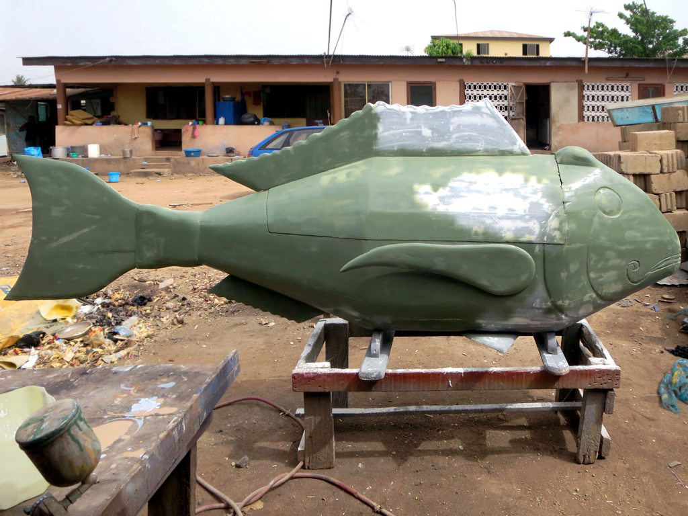

What's Really Going On
In Teshie, a coastal district of Accra, a funeral procession moves down a dirt road to the sound of drums and singing, not silence. On the shoulders of six pallbearers rides a coffin carved and painted to look, unmistakably, like a giant sea bass — scales, fins, and all. The man inside spent his life fishing these waters. Nobody in the crowd finds the coffin strange or funny. To them, it would have been stranger to bury him in a plain wooden box, as if the specific shape of his life didn't matter.
These are Ghana's so-called "fantasy coffins," known in the Ga language as abebuu adekai — literally, "receptacles of proverbs." The tradition belongs to the Ga people of Ghana's Greater Accra region, and the idea behind it is direct: a coffin should represent the profession, passion, status, or defining trait of the person inside. A fisherman gets a fish. A pilot or a lifelong dreamer gets an airplane. A chief might be buried inside a carved lion. A seamstress inside a giant sewing machine, a bar owner inside an oversized beer bottle, a cocoa farmer inside a cocoa pod the size of a canoe.
Much of the tradition's popularization is credited to a single carpenter, Seth Kane Kwei, starting in the 1950s. As the story goes, Kane Kwei built a cocoa-pod-shaped ceremonial palanquin for a local chief to use in an upcoming festival; the chief died before the festival arrived, and was buried in the palanquin instead. Soon after, Kane Kwei built an airplane-shaped coffin for his own grandmother, who had spent her life dreaming of flying but never once set foot on a plane. Word of his work spread across the region, and what began as one family's improvisation grew into Ghana's best-known funerary art form — carried on today by his descendants at the Kane Kwei Carpentry Workshop.
A Ghanaian funeral doesn't ask you to forget the person who died — it asks you to remember exactly who they were.
Where This Comes From
Later research complicates that tidy origin story, without erasing Kane Kwei's role. Anthropologist Regula Tschumi's fieldwork found that Ga chiefs had, for generations before Kane Kwei, already been buried in figurative coffins echoing the shape of their ceremonial palanquins — a privilege reserved for royalty. What Kane Kwei actually did was take a chiefly custom and make it available to anyone who could pay a carpenter: turning a mark of royal status into a craft any family could commission for a beloved parent, sibling, or friend.
The coffins reached the international art world in 1989, when a handful of pieces appeared in Magiciens de la Terre, a landmark exhibition in Paris that introduced Western audiences to abebuu adekai for the first time as sculpture, not just as funerary objects. Museums took notice — the National Museum of Funeral History in Houston now holds one of the largest collections outside Ghana — and today collectors sometimes commission fantasy coffins purely as art, with no funeral attached to them at all, a use their original carpenters never anticipated.
Beyond the Basics
None of this comes cheap. A custom coffin typically costs somewhere between $300 and over $1,000, an enormous sum in a country where a large share of the population lives on just a few dollars a day. Families often save for years specifically for this expense, well before anyone in the family is close to dying, because in Ga culture how you are buried says something permanent and public about how much you were loved. Skimping on a funeral, however unintentionally, can be read as a quiet failure of respect toward the person who died.
That logic only makes sense once you understand the bigger picture: funerals in southern Ghana are rarely quiet, private affairs. They're major, expensive, deliberately public events that can draw hundreds of guests, involve elaborate matching fabrics, live music, and dancing, and are sometimes delayed for weeks or months after a death simply so the family has time to organize a send-off worthy of the person being honored. The funeral, not the burial itself, is treated as the priority — which is exactly the soil a coffin shaped like a sea bass or a Coca-Cola bottle grows out of.
That same instinct — treating death as something to perform rather than something to hide — shows up in a much newer, unrelated phenomenon that most of the world has actually seen: the "dancing pallbearers" video that went globally viral in 2020, set to the EDM track "Astronomia." The group behind it, led by Benjamin Aidoo and based in the town of Prampram, isn't part of any ancient burial custom; Aidoo started it as a regular pallbearer service in 2003 and only added choreography later, first drawing international attention through a 2017 BBC feature. It's a modern business innovation, not a centuries-old ritual — but it comes from the same cultural instinct as the coffin carved like a fish: grief, here, doesn't have to look like silence.

What to Know If You Visit
A few pointers if you're curious about coffin workshops or attend a funeral in Ghana:
- If invited to a funeral, ask the family about the dress code in advance — red and black usually signal mourning, while white or bright colors can mark the celebration of a long, full life.
- Funerals are often held on Saturdays, sometimes weeks or months after the death itself, so don't assume the burial happens right away.
- Workshops like the original Kane Kwei Carpentry Workshop in Teshie (Accra) welcome visitors, but always ask permission before photographing artisans or coffins still in progress.
- If you'd like a souvenir rather than a full-size coffin, ask about miniature versions — several workshops make small collectible replicas specifically for visitors.
- Bringing a small cash contribution toward funeral costs is a normal, expected gesture if you attend as a guest, even as a foreigner.
- Treat the coffin's shape with the same respect you'd give any funeral custom — to the family, it's a sincere tribute, not a joke.
The Bigger Picture
What looks, from the outside, like the strangest possible way to bury someone — a body inside a giant Coca-Cola bottle, pallbearers moonwalking a casket through the street — is, on closer look, one of the most emotionally literal funeral customs anywhere in the world. It insists that the specific, unrepeatable shape of somebody's life is worth making visible one last time, in wood and paint, before it disappears for good.
Curious how nearby cultures handle similar rules? Don't miss our pieces on The Festival That Sings to Death Instead of Fearing It and Buying Without Haggling in Morocco Is Almost Bad Manners.